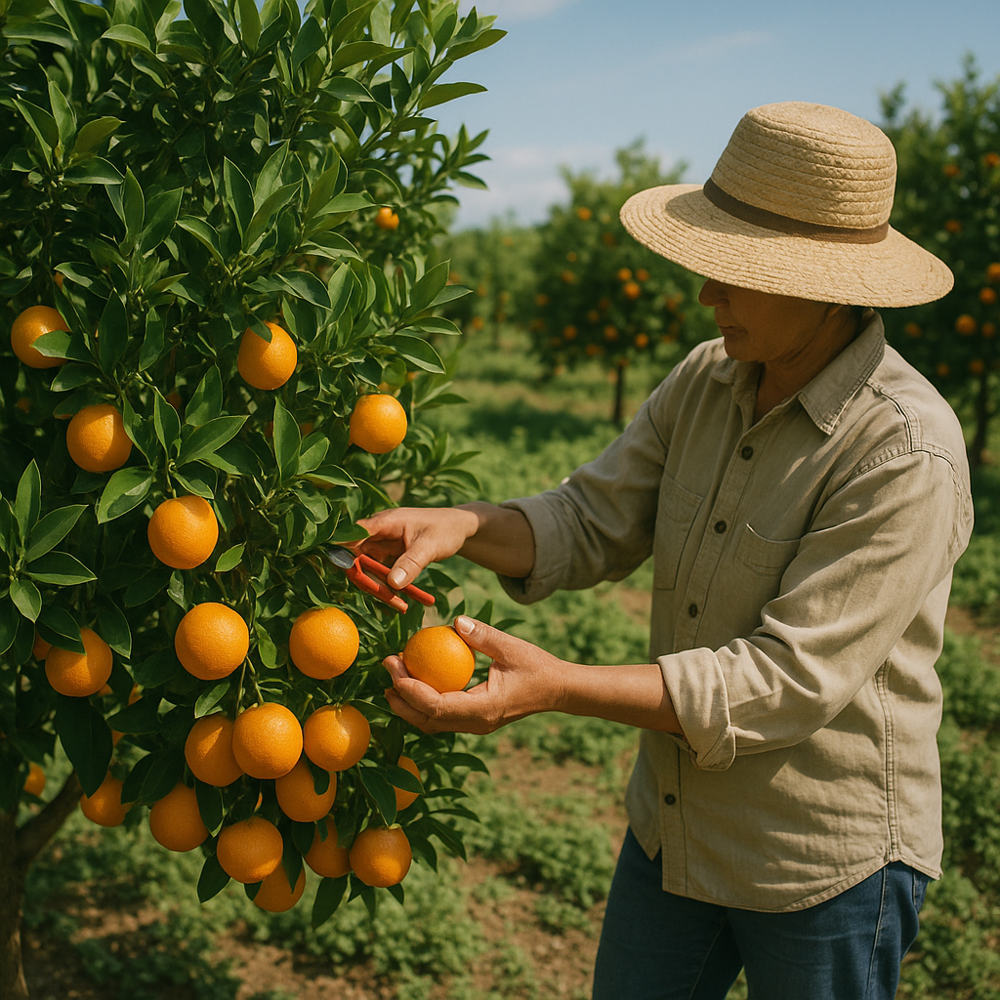

HISTORIA
Desde 1999 la empresa Citricos Zambrano se ha dedicado a la comercialización de naranjas, mandarinas y limones de la mejor calidad. Fue fundada por el Señor Zambrano y su esposa Olga Aranguren, quienes comparten una gran pasión por el comercio. Asi empiezan con un local como punto de venta y un único punto de bodegaje.
Entre los años 2003- 2004 la empresa se experimento un importante crecimiento, llegando a tener tres locales como punto de venta y tres centros de bodegaje. En este mismo periodo, la empresa tecnifico su operación de desinfección, encerado y clasificación de los cítricos, lo cual fue clave para consolidarse como un referente en el sector.
De 2005 a 2019 Citricos Zambrano logró posicionarse en el mercado como una empresa familiar reconocida por su responsabilidad, honestidad y compromiso con sus clientes proveedores y equipo de trabajo. En el año 2020 la empresa enfreta retos significativos como la pandemia del COVID-19 y el traslado de sus puntos de bodegaje dentro de Corabastos lo que les obliga a replantear su modelo de negocio, implementando nuevas estrategias y reduciendo costos operativos para poder seguir siendo competitivos en el mercado.
En la actualidad Citricos Zambrano cuenta con tres puntos de venta y dos puntos de bodegaje, con un equipo de trabajo fortalecido y comprometido, que continúa esforzándose para mejorar día a día por mejorar mejores y ofrecer los mejores cítricos a sus clientes.
MISIÓN
En Cítricos Zambrano, somos una empresa comprometida en ofrecer productos frescos y de calidad, construyendo relaciones de confianza con nuestros clientes y nuestro equipo, basadas en el respeto, la mejora continua, la dedicación, responsabilidad y el orgullo por lo que hacemos.
VISIÓN
Ser una empresa reconocida en el tiempo por su trayectoria, capacidad de trabajo colaborativo y mejora continua, destacándose en el comercio como referente de calidad, con raíces sólidas en Corabastos y una visión de crecimiento.
NUESTROS VALORES
Los Valores que se fomentan en la empresa Cítricos Zambrano son el pilar de la estructura organizacional, constituyen los valores con los que se construyen las relaciones, las decisiones y el comportamiento diario de la empresa.
Responsabilidad: Cumplir con las obligaciones y asumir las consecuencias de nuestras acciones y decisiones, con actitud de respeto hacia la empresa, clientes y el entorno.
Trabajo en equipo: Colaborar con respeto y confianza para la unión de talentos y esfuerzo para lograr objetivos comunes y fortalecer el crecimiento colectivo.
Compromiso: Impulsar cada acción con entrega, sentido de pertenencia, lealtad, buscando siempre lo mejor para la empresa, sus metas y su equipo de trabajo.
Transparencia: Actuar con claridad, honestidad fomentando la confianza en nuestras relaciones internas y externas.